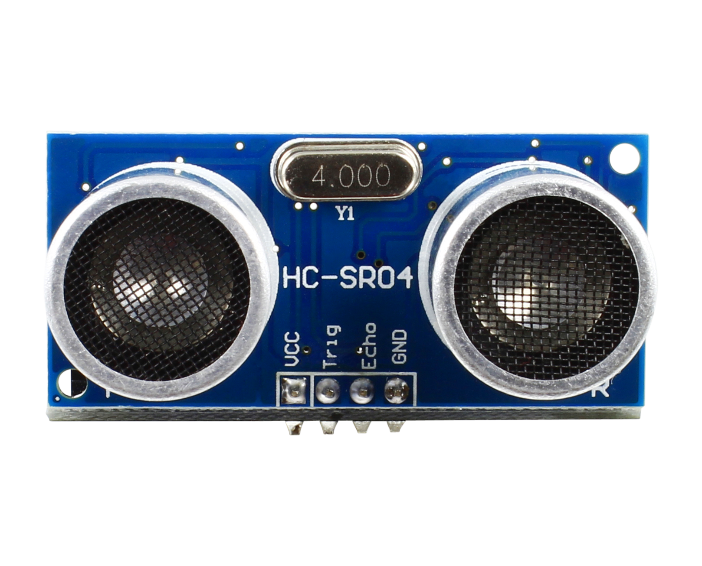
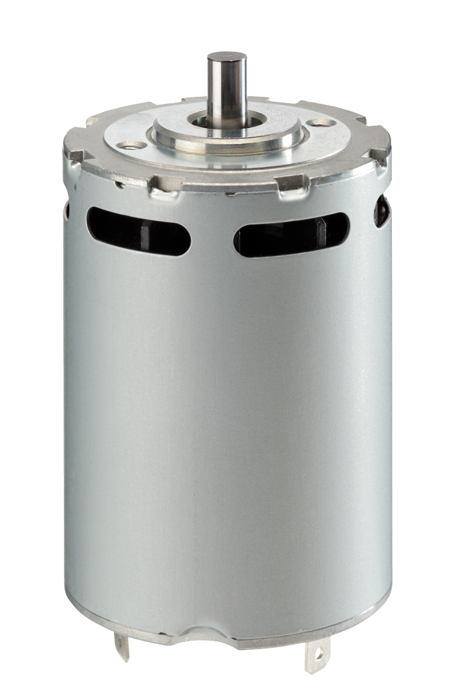
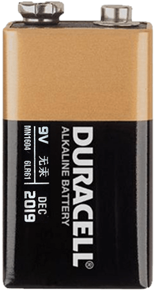
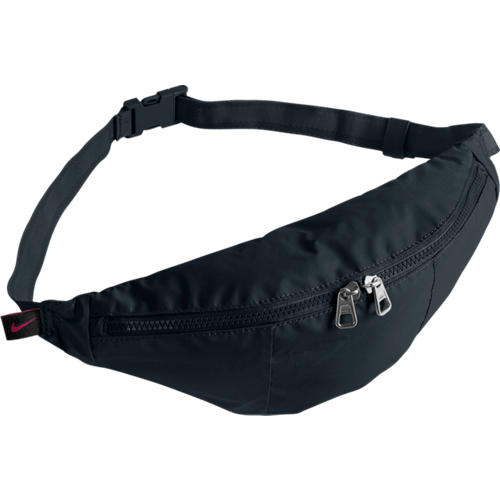

Introduction and Motivation
Welcome to our project website featuring the Haptic Belt, an accessible device designed to help individuals with mobility challenges navigate unexpected surface elevation changes. Our device aims to address a significant problem faced by many individuals, including those with walking disabilities, the visually and hearing impaired, and people with limited range of motion. The Haptic Belt detects changes in the walking surface and sends vibrations to notify the user when a surface change is coming up, reducing the risk of falls and injuries. Through a needfinding study, we found that there is a need for a discrete, portable, and intuitive design that allows users to change which alerts go off. We also discovered that there are few similar devices on the market, making the Haptic Belt a unique solution to a common problem. Our device can be used in a wide range of scenarios, including non-uniform terrain and situations where vision is impaired, such as dark rooms or outdoor environments. We also recognize the importance of connecting sound alerts to headphones using Bluetooth for individuals with impaired hearing. With the Haptic Belt, we hope to create an accessible device that can help mitigate the dangers of unexpected surface elevation changes for individuals with mobility challenges. Join us on this journey as we work towards making walking safer and more accessible for everyone.
Arduino

Bridges the gap between hardware and software.
Ultrasonic Sensor

Senses changes in the floor and determines when there are big gaps or steps coming up.
DC Motor

Creates vibrations for the user whenever a step or gap is detected.
9V Battery

Powers the above devices.
Walker

Belt bag to hold all components and allow the user to easily wear it to detect changes in elevation.
Conclusion and Future Work
In conclusion, the proposed hardware solution with built-in belt sensors, LIDAR technology, and sound alerts connected to headphones via Bluetooth provides a reliable and efficient system for monitoring and controlling height inputs during physical activities. However, there are still some challenges that need to be addressed, such as adjusting sensors for people with different heights and connecting the hardware with new software techniques. In the future, a phone app could be developed to interface with the hardware and provide more control over the system, including light and sound options. Additionally, offering different belt colors and designs could make the hardware more appealing to a wider range of users. By implementing these future steps and addressing the challenges, this hardware solution could provide an excellent tool for individuals seeking to track and improve their physical activity performance.